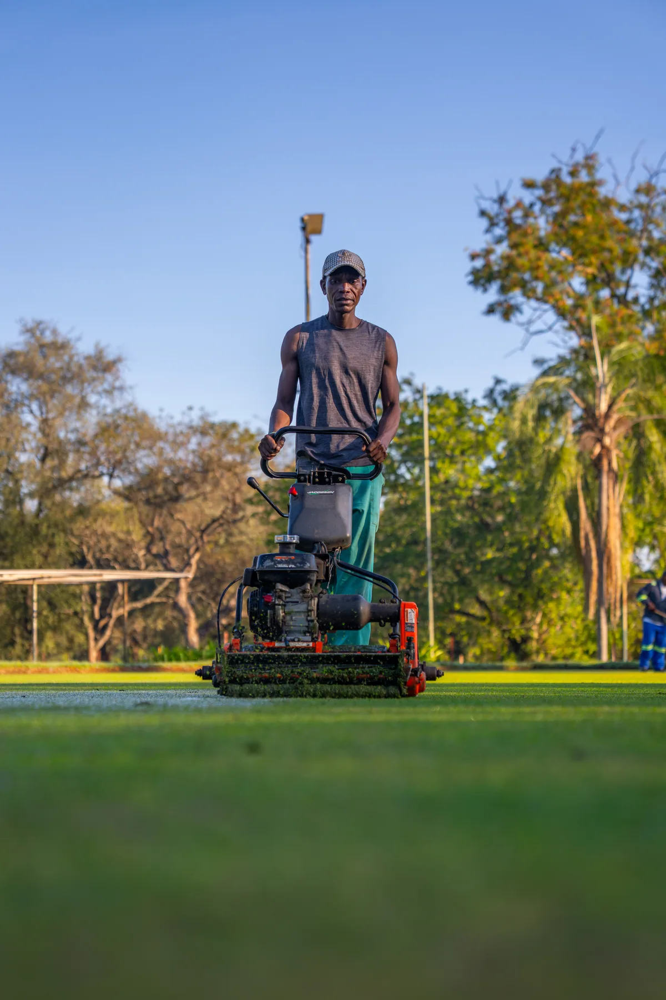
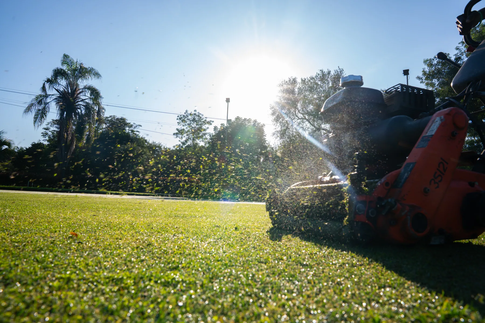
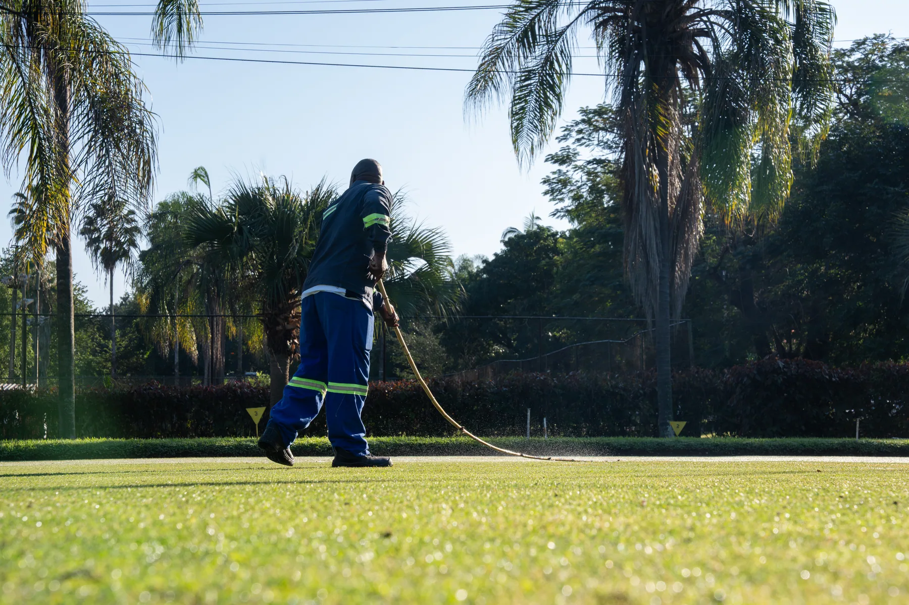

Lawn Bowls · The bowling green
The Lowveld's most sociable tradition.
A manicured bowling green at the heart of club life — where an afternoon's rinks turn easily into an evening at the bar. Lawn bowls at Triangle is as much about company as competition.
The bowling green
Roll up, all welcome
Rinks, jacks & good company.
Our bowling green is one of the club's most cherished traditions — a beautifully kept surface for friendly roll-ups, club competitions and visiting rinks. Newcomers are always welcome; it is the easiest sport at Triangle to pick up, and the hardest to leave.
Touring bowls sides and social groups can pair a day on the green with chalets and catering on the estate — a relaxed Lowveld getaway with a competitive edge.
Manicured
A true, well-kept bowling surface.
Club life
Roll-ups, comps & the bar.
Beginner-friendly
Easy to learn, warmly welcomed.
Rinks welcome
Pair a visit with a stay.
In pictures
On the green.


